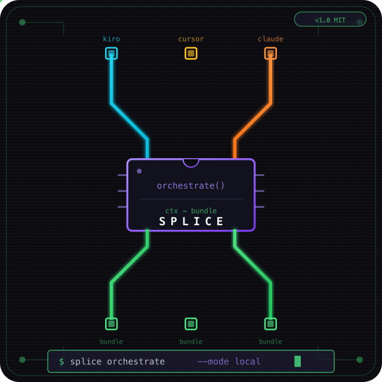

SPLICE
Zero-friction context sync between Kiro, Cursor, and Claude Code. Install once, forget about it.


pip install splice-cli && cd your-project && splice setup
# That's it. Context syncs automatically from now on.
How it works
Features
Zero commands
After setup, Splice is invisible. No triggers to remember, no workflow to learn.
Cross-IDE sync
Context flows between Kiro, Cursor, and Claude Code via a shared bundle in your repo.
Cross-machine sync
The bundle commits with your code. Any machine with git pull gets the full context.
Privacy-first
Mock and Ollama modes keep your code on localhost. No cloud required for orchestration.
Smart routing
Routes to the right agent profile (debugger, architect, implementer) based on context.
Language agnostic
Works with Python, TypeScript, Go, Rust — any codebase, any project structure.
Metrics
Supported IDEs
Orchestration modes
mock
Rule-based routing. Instant, offline, free. Code never leaves your machine.
ollama
Local LLM (llama3.2). ~96% context reduction. Privacy-first — all on localhost.
bedrock
AWS cloud. Amazon Nova Lite. For teams with AWS infrastructure already in place.